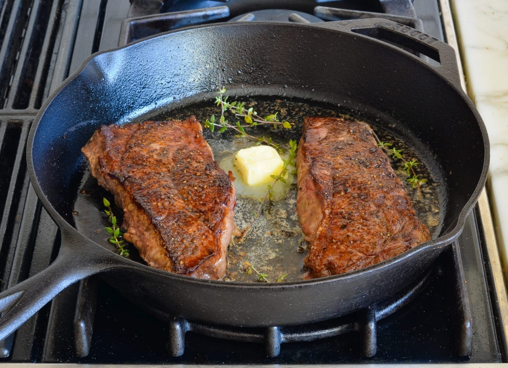

How To Cook Steak On The Stovetop

Description
With just a handful of ingredients and a single pan, you can prepare a steak that rivals anything you’d enjoy at a high-end steakhouse.
Ingredients
- 2 New York strip or ribeye steaks
- 1 heaping teaspoon kosher salt
- 1/2 teaspoon freshly ground pepper
- 2 tbsp vegetable oil
- 1 tbsp unsalted butter
- A few sprigs fresh thyme leaves
Steps
- Pat the steaks dry with paper towels, then season all over with salt and pepper.
- Heat a heavy pan (preferably cast-iron or stainless steel) over medium-high heat until very hot, then add oil and heat until it begins to shimmer and move fluidly in the pan.
- Carefully set the steaks in the pan, releasing them away from you so that the oil doesn't splatter in your direction.
- Leave the steaks alone to develop a golden crust. Flip the steaks when they release easily and the bottom is a deep-brown color, about 3 minutes.
- Continue to cook the steaks for another 3 to 4 minutes for medium rare. For medium, cook for 4 to 5 minutes. For well-done, cook for 5 to 6 minutes.
- During the last minute of cooking, add the butter and thyme sprigs to the pan with the steaks.
- If serving the steaks unsliced, transfer them to plates and serve hot. If you plan to slice the steaks, transfer them to a cutting board and cover with aluminum foil. Let steaks rest for 5 to 10 minutes, then slice thinly against the grain.